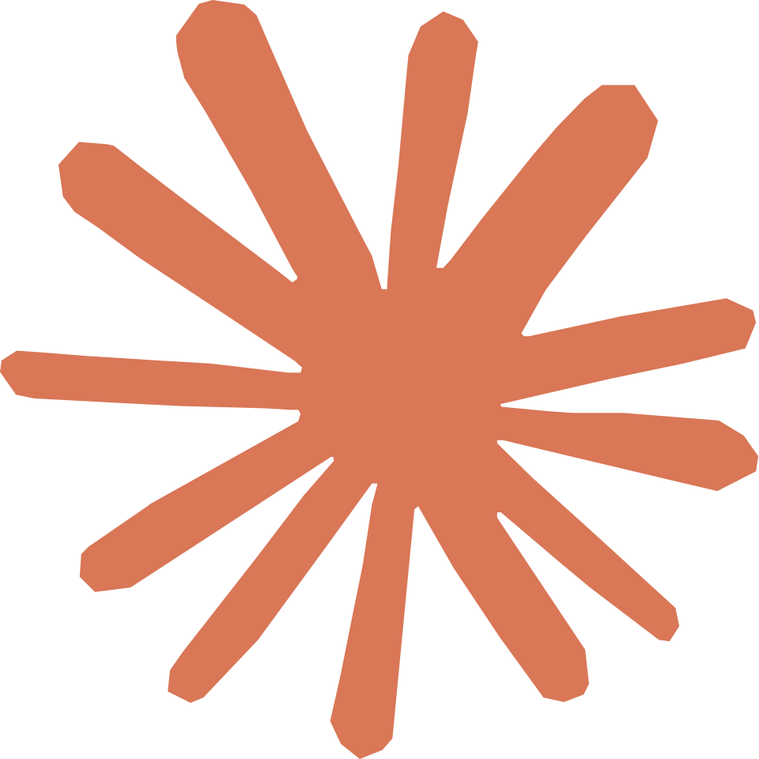

Claude Session Tracer
What one Claude Code session cost, turn by turn: the context each API call re-sent from the prompt cache, what it added to it, what it produced, and the files the agent read, searched and edited along the way.
How to read this page
Each column is one API call (a turn). The token rows at the top show what the turn cost; the tool row shows what the agent did; the file rows show where it looked. All token rows share one scale, so the bars are comparable across rows.
Re-sent from cache, new on top. The blue bar grows every turn because the whole conversation so far is re-sent with each call. The thin slice on top is what the turn added, which the next turn re-sends in blue. Its light-blue base is the static prefix shared by all sessions, the fixed system prompt and the tool definitions, which the CLI keeps cached, so even the first call reads it rather than writing it. The cost of a session is mostly the area under the blue bars, so the number of turns and what each one appends matter more than any single read.
New, written to cache. That slice alone: the results of the tools the agent called last turn (orange, estimated at 2.3 characters per token, the rate measured on these transcripts), the agent's own previous words and tool calls (green), on the first turn the session setup (yellow: the session-specific system prompt sections, the skill and agent listings, CLAUDE.md, the task prompt) and later the per-turn reminders and instructions the CLI injects (grey).
Files. The bar above the grid sorts the file rows (first seen, lines read, edits, search hits, file size, name) and filters them by a part of their path; both are remembered in this browser. Lines attributed to a file are those in tool output: a Read or cat/sed/head of the file counts as read lines, an Edit as edited lines, a grep output line naming the file as a search hit. Files seen only in search results are hidden by default.
Interacting. Hover any cell or row label for details. Click a turn number or any cell in its column to list the turn's commands; ← → step between turns, Esc closes. The ▸ next to a row label opens its breakdown.
Live mode (serve.py). The trace refreshes every few seconds. The session dropdown switches to any other session started in the same folder; "latest" keeps following, and picks up a new session when one starts. With "follow newest turn" on, each new turn is selected and scrolled into view, so the detail panel shows what the agent is doing now; picking another turn pauses that until you tick it again. While the tab is in the background its title counts the turns that arrived.
Cost. When the trace records what the run cost, that is shown; otherwise, and for live sessions, an estimate from the model's list prices: cache reads, cache writes (at the 1-hour rate Claude Code uses), uncached input and output, each at its own rate, per turn. Haiku 5.5's higher rate for prompts over 100K tokens is applied per turn. Prices are the ones published on 2026-10-09; the turn detail shows each turn's share.
Seconds per turn. Its own scale. Green is the model's time, from the prompt or the previous tool result until the response finished streaming; orange is the time its tools then took. The waits between your prompts are not counted, so the "active time" tile is how long the agent worked, not how long the session was open.
Prompts. One message you type usually takes the agent several API calls. The numbered marks in the Prompts row, and the border on the left of those columns, show where each of your messages starts; the turns up to the next mark are its answer. The turn detail quotes the message, and the table under the grid lists every prompt with the tokens its turns caused, input and output together, as a share of the session, with their time and cost.
Hover a cell for details · click a turn to list its commands · ← → step between turns
Make a trace of your own session
Claude Code keeps a transcript of every session. Extract one with the script from the repository (Python 3.8+, no dependencies) and open or drop the result here:
python3 turn_trace.py --cwd /path/you/ran/claude/in --out trace.json
--list shows the sessions started in a folder, --session <id prefix> picks one. Nothing leaves your browser: the page has no external resources and does not upload the file.
To watch a session while it runs, start python3 serve.py --cwd /path/you/ran/claude/in instead: it opens this page in live mode, following the latest session of that folder and refreshing it every few seconds.